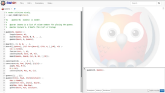
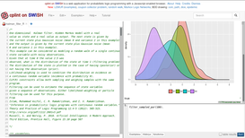
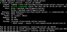

Next: Description, Up: (dir) [Contents]
This manual is for SWISH Installer.
| • Description: | A brief description of what this is all about | |
| • Demonstrations: | Public available example websites | |
| • Available packages and descriptions: | Table of available packages for each system and their descriptions | |
| • Installation: | Installation procedures on various systems | |
| • Components download: | Components to be downloaded after the installation | |
| • Daemons management: | How to start, stop and enable the daemons | |
| • Accessing the server: | How to access and use the servers | |
| • Development: | A thorough description on how to develop over this installer | |
| • Tests: | Tables explaining on what distributions the packages have been tested | |
| • Thanks: | People and communities | |
| • References: | References to the technologies used |
Next: Demonstrations, Previous: Top, Up: Top [Contents]
The purpose of this repository is to handle the creation of serveral packages and helpers in order to install Cplint1 on SWISH2 with an Rserve3 environment, as well as the "vanilla" version of SWISH.
SWISH relies on SWI Prolog4, a prolog interpteter.
  In order to understand this documentation correctly some terminology used here must be explained.
< and > means pseudocode.
# means that the command must be executed by root.
$ means that the command must be executed by the current user.
When you see something like the following, it represents a directory listing of
the first named (head) directory. These representations are generated from
$ tree --charset=ascii -d <dirname>.
common/ |-- rserve-sandbox |-- swish `-- swish-cplint
Next: Available packages and descriptions, Previous: Description, Up: Top [Contents]
If you want to see how the final result might look like, have a look at http://cplint.lamping.unife.it/ for Cplint on SWISH and http://swish.swi-prolog.org/ for the "vanilla" version of SWISH.
Next: Installation, Previous: Demonstrations, Up: Top [Contents]
| Distributions | SWISH | Cplint on SWISH | Cplint on SWISH binary | Rserve sandbox | Rserve sandbox binary |
|---|---|---|---|---|---|
| Arch Linux | swish | swish-cplint | swish-cplint-bin | rserve-sandbox-docker | rserve-sandbox-docker-bin |
| Debian | - | swish-cplint | - | rserve-sandbox-docker | - |
The following terms will be used throughout the document to identify the packages in a generic manner (non-distribution specific).
| - | SWISH | Cplint on SWISH | Cplint on SWISH binary | Rserve sandbox | Rserve sandbox binary |
|---|---|---|---|---|---|
| Description | the vanilla version of SWISH | SWISH with the Cplint suite. Uses Rserve sandbox as a main dependency | precompiled version of Cplint on SWISH. Uses Rserve sandbox binary as well as precompiled web components | an R environment running inside a docker container | precompiled version of Rserve sandbox |
Next: Components download, Previous: Available packages and descriptions, Up: Top [Contents]
There at least two possibilities to install the packages.
Yaourt5 is among the most popular AUR6 helpers available. The following command7 will install all the dependencies automatically. Use the package names described in the Available packages section.
$ yaourt -Sa s <package name> --noconfirm
Note: When you install Yaourt on Parabola GNU/Linux-libre8 you will be asked to remove
your-freedom.
Adapt this command to match the to be installed package:
$ wget "https://aur.archlinux.org/cgit/\ aur.git/snapshot/<package name>.tar.gz" $ tar -zxvf <package name>.tar.gz $ cd <package name> $ makepkg -sri --noconfirm
swi-prolog-devel
rserve-sandbox-docker
swish-cplint
swi-prolog-devel
rserve-sandbox-docker-bin
swish-cplint-bin
swish
Arch Linux and derivative distros use Systemd9 as the init system. First see Components download and then see Daemons management.
Manual installation involves a building phase. Please read the Development Building the packages chapter.
See the previous section
Before installing the actual package some dependecies must be installed manually:
# apt-get install npm nodejs-legacy # npm install -g bower
# apt-get install software-properties-common # sudo apt-add-repository ppa:swi-prolog/devel # sudo apt-get update # sudo apt-get install swi-prolog
Note: Installation of SWI Prolog dev on Trisquel 8.0 Alpha11 is a bit tricky:
- - Install this library first: http://packages.ubuntu.com/yakkety/amd64/libreadline7/download
- - Install the SWI Prolog dev version like this:
# echo "deb http://ppa.launchpad.net/swi-prolog/devel/ubuntu yakkety main" \ >> /etc/apt/sources.list.d/swi-prolog.list # apt-key adv --keyserver keyserver.ubuntu.com --recv-keys 6DBFCA18 # apt-get update # apt-get install swi-prolog
Debian and derivative distros now use Systemd12 as the init system. First see Components download and then see Daemons management.
Next: Daemons management, Previous: Installation, Up: Top [Contents]
This section only applies to Cplint on SWISH and Cplint on SWISH binary.
Before running the daemons some components must be downloaded. The first thing to do is to start Docker13 manually. See Daemons management for more information.
To download the Docker image file as well as all dependencies for R14, or to load the docker image, run the following command:
$ sudo -u rsd rserve-sandbox-docker -i
Before reading on, start the Rserve sandbox service, to avoid errors on some prolog tests executed by the Cplint R library.
To download all the prolog packages necessary in order to run Cplint on SWISH correcly:
$ sudo -u swish swish-cplint -i
If this method does not work you can run the following:
$ sudo -u swish -i $ swish-cplint -i
Next: Accessing the server, Previous: Components download, Up: Top [Contents]
Commands to manage the daemons depend on the init system in use.
Docker is a dependency which must be started manually during the setup.
# systemctl start docker
The following command will run swish-cplint as well as
rserve-sandbox-docker as its dependency:
# systemctl start swish-cplint
To start swish-cplint and rserve-sandbox-docker at boot:
# systemctl enable swish-cplint
You can stop both services with:
# systemctl stop swish-cplint # systemctl stop rserve-sandbox-docker
Note: stopping
swish-cplintdoes not imply thatrserve-sandbox-dockerwill be stopped.
To check the status of both daemons:
# systemctl status swish-cplint # systemctl status rserve-sandbox-docker
For simplicity, services names do not change, so the same instructions of Cplint on SWISH are also applicable here.
Running and managing SWISH alone is very similar to the
previous method: instead of using swish-cplint
as part of the commands, you must use swish.
You also don’t need to worry about Docker.
Next: Development, Previous: Daemons management, Up: Top [Contents]
To access the web interface you need a
JavaScript 15
enabled browser and you have to connect to port 3050.
For example: http://localhost:3050 or http://127.0.0.1:3050
Next: Tests, Previous: Accessing the server, Up: Top [Contents]
.
|-- common
| |-- rserve-sandbox-docker
| | `-- systemd
| |-- rserve-sandbox-docker-bin -> rserve-sandbox-docker
| |-- swish
| | `-- systemd
| |-- swish-cplint
| | `-- systemd
| `-- swish-cplint-bin -> swish-cplint/
`-- distributions
|-- archLinux-based
| |-- dest
| |-- packages
| | |-- rserve-sandbox-docker
| | |-- rserve-sandbox-docker-bin
| | |-- swish
| | |-- swish-cplint
| | `-- swish-cplint-bin
| `-- test
`-- debian-based
|-- dest
`-- packages
|-- rserve-sandbox-docker
| `-- debian
`-- swish-cplint
`-- debian
The distributions directory contains all the files useful to build packages for a specific distribution. Makefiles are used to achieve this.
The common directory contains all the files which are not distribution specific.
common/ |-- rserve-sandbox-docker | |-- run.sh | `-- systemd | `-- rserve-sandbox-docker.service |-- rserve-sandbox-docker-bin -> rserve-sandbox-docker |-- shared_functions.sh |-- swish | |-- run.pl | |-- run.sh | `-- systemd | `-- swish.service |-- swish-cplint | |-- install_web_iface_deps.pl | |-- run.pl | |-- run.sh | `-- systemd | `-- swish-cplint.service `-- swish-cplint-bin -> swish-cplint/
The run.sh files are helpers to start and stop the daemons. These helpers should work on any distribution. You can edit the variables at the top of each file accordingly.
The run.pl files are a modified version of the original files with the same name. These have been created in order to lauch SWISH as a background program. Without the changes contained in those files, you couldn’t run SWISH in the background.
Another important file is shared_functions.sh which contains all common functions for the run.sh files. It must be appended to every run.sh, within a Makefile for example with the following:
$ cat shared_functions.sh >> {rserve-sandbox*,swish,swish-cplint}/run.sh
Cplint on SWISH and Cplint on SWISH binary contain a post installation script called install_web_iface_deps.pl. This script, called by run.sh, simply installs all the necessary Prolog dependencies automatically.
Makefiles are used to build the package in a new directory by copying all necessary files (also from the common directory). Each Makefile and build_pkg.sh script is distribution specific.
You will read general information about the packages, all their install and remove actions and how to build your version of the modified packages.
All actions described here must be done sequentially.
/usr/share/rserve-sandbox-docker
$ ln -s /usr/share/rserve-sandbox-docker/run.sh \ /usr/bin/rserve-sandbox-docker
rserve user and group.
# getent group rserve 1>/dev/null 2>/dev/null \
|| groupadd -g 32749 -r rserve >/dev/null
# getent passwd rserve 1>/dev/null 2>/dev/null \
|| useradd -u 32749 -m -d /home/rserve \
-s /bin/false -r -g rserve rserve >/dev/null
# chmod 750 /home/rserve
rsd user and group.
# getent group rsd 1>/dev/null 2>/dev/null \
|| groupadd -r rsd >/dev/null
# getent passwd rsd 1>/dev/null 2>/dev/null \
|| useradd -s /bin/false -r -g rsd rsd >/dev/null
docker group
# gpasswd -a rsd docker >/dev/null
# chown -R rsd:rsd /usr/share/rserve-sandbox-docker
Note: the
rsduser and group was created in order to avoid privilege escalation, since any user which belongs to thedockergroup is equivalent toroot21.
rsd user
and group, rserve user and group
and all the Docker files can be removed (this depends
on the package remove policies of the chosen distro).
/usr/share/swish-cplint
$ bower --allow-root install $ make src
$ ln -s /usr/share/swish-cplint/run.sh /usr/bin/swish-cplint
swish user and group
# getent group swish 1>/dev/null 2>/dev/null \
|| groupadd -r swish >/dev/null
# getent passwd swish 1>/dev/null 2>/dev/null \
|| useradd -m -d /home/swish -r -g swish swish >/dev/null
swish user to the previously created rserve
group.
# gpasswd -a swish rserve >/dev/null
# chown -R swish:swish /usr/share/swish-cplint
swish user
and group can be removed (this depends on the package
remove policies of the chosen distro).
/usr/share/swish-cplint
$ curl -o swish-bower-components.zip \ http://www.swi-prolog.org/download/swish/swish-bower-components.zip $ unzip swish-bower-components.zip $ rm -rf swish-bower-components.zip
/usr/share/swish
$ bower --allow-root install $ make src
$ ln -s /usr/share/swish/run.sh /usr/bin/swish
swish user and group
# getent group swish 1>/dev/null 2>/dev/null \
|| groupadd -r swish >/dev/null
# getent passwd swish 1>/dev/null 2>/dev/null \
|| useradd -m -d /home/swish -r -g swish swish >/dev/null
# chown -R swish:swish /usr/share/swish
swish user
and group can be removed (this depends on the package
remove policies of the chosen distro).
Before actually building the packages, a set of tools is necessary in order to build (and install) the modified packages. You will find a list of package dependencies under the "Needed tools" sections. These lists use the real package names in the correspondent distribution.
archLinux-based/
|-- build_pkg.sh
|-- dest
|-- Makefile
|-- packages
| |-- rserve-sandbox-docker
| | |-- .install
| | `-- PKGBUILD
| |-- rserve-sandbox-docker-bin
| | |-- .install -> ../rserve-sandbox-docker/.install
| | `-- PKGBUILD
| |-- swish
| | |-- .install
| | `-- PKGBUILD
| |-- swish-cplint
| | |-- .install
| | `-- PKGBUILD
| `-- swish-cplint-bin
| |-- .install -> ../swish-cplint/.install
| `-- PKGBUILD
`-- test
`-- swish_installer_full_test
bash
coreutils
gawk
make
pacman29
Once you have made your changes you can run $ make
then change directory into one of the new dest/*.aur generated
directories and finally run $ makepkg -sri to install
the package.
You also have the possibility to run the test script $ ./test/swish_installer_full_test. Here is the help page:
Usage: swish_installer_full_test [OPTION]
Full automated install test for the Arch Linux packages in swish-installer
Options are grouped in couples: one excludes the other
Options:
-b, --binary use binary packages where available
-c, --compile compile packages where available
-d, --dev use development branches where available
-m, --master use default branches where available
-e, --experimental use swish-installer's dev branch
-s, --stable use swish-installer's master branch
-h, --help print this help
Default: --compile --master --stable
Dependencies: git, wget.
Exit status:
0 if OK,
1 if an error occurred.
swish_installer_full_test online help:
<https://frnmst.github.io/swish-installer/swish-installer.html#Help-pages>
Full documentation at:
<https://frnmst.github.io/swish-installer/swish-installer.html>
Copyright © 2017 Franco Masotti. License GPLv3+: GNU GPL version 3 or
later <http://gnu.org/licenses/gpl.html>.
This is free software: you are free to change and redistribute it. There
is NO WARRANTY, to the extent permitted by law.
In the process of writing Debian packages, some conventions30 have been followed (at least in part).
debian-based/
|-- build_pkg.sh
|-- dest
|-- Makefile
`-- packages
|-- rserve-sandbox-docker
| `-- debian
| |-- changelog
| |-- compat
| |-- control
| |-- copyright
| |-- docs
| |-- install
| |-- postinst
| |-- postrm
| |-- rserve-sandbox-docker.links
| `-- rules
`-- swish-cplint
`-- debian
|-- changelog
|-- compat
|-- control
|-- copyright
|-- docs
|-- install
|-- postinst
|-- postrm
|-- rules
`-- swish-cplint.links
apt
bash
build-essential31
dh-systemd32
cleancss33
coreutils
curl
devscripts34
dpkg
gawk
gzip
make
tar
xz-utils
Also install Bower, as indicated in the Debian install section Installation
Once you have made your changes you can run $ make
then change directory into one of the new dest/*.debian generated.
To build the package move inside one of the
dest/<package>.debian/<package>-<version>
directories and run $ debuild -us -uc.
Done that, you can move to the previous level (..).
You should see a <package>.deb file (among other new files).
Run # dpkg -i <package>.deb, then # apt-get install -f
to install the package and all its dependencies.
rserve-sandbox-docker [OPTION]
Docker spec for running Rserve in a sandbox
Only a single option is permitted.
-h print this help
-i install image and dependencies
-k kill the container
-r remove the docker image
-s start the container
Exit status:
0 if OK,
1 some error occurred.
Full documentation at: <https://github.com/frnmst/rserve-sandbox>
rserve-sandbox-docker [OPTION]
Docker spec for running Rserve in a sandbox
Only a single option is permitted.
-h print this help
-i load image
-k kill the container
-r remove the docker image
-s start the container
Exit status:
0 if OK,
1 some error occurred.
Full documentation at: <https://gitlab.com/frnmst/rserve-sandbox-bin>
swish-cplint [OPTION]
SWI-Prolog for SHaring: a SWI-Prolog web IDE integrated with the cplint suite
Only a single option is permitted.
-h print this help
-i install dependencies
-k kill swish-cplint
-s start swish-cplint
Exit status:
0 if OK,
1 some error occurred.
Full documentation at: <https://github.com/friguzzi/swish>
and at: <https://github.com/friguzzi/cplint>
swish [OPTION]
SWI-Prolog for SHaring: a SWI-Prolog web IDE
Only a single option is permitted.
-h print this help
-k kill swish
-s start swish
Exit status:
0 if OK,
1 some error occurred.
Full documentation at: <https://github.com/SWI-Prolog/swish>
The source of this documentation is under the doc directory.
To be able to compile it, you have to install several tex packages
(for example: texlive-most and texi2html if you are using
Arch Linux) that contain the following binaries:
makeinfo texi2dvi docbook2html docbook2pdf docbook2txt texi2html perl
After running make, a directory named manual
is created and you can access the files by opening
index.html with a browser.
Next: Thanks, Previous: Development, Up: Top [Contents]
A list of tested packages and distributions using virtual machine environments: (either qvm35 or VirtualBox and OS Boxes36)
| Distributions | SWISH | Cplint on SWISH | Cplint on SWISH binary | Rserve sandbox | Rserve sandbox binary |
|---|---|---|---|---|---|
| Arch Linux (VirtualBox and OS Boxes) | - | OK | - | OK | - |
| Debian 8.7 Jessie (qvm) | - | Doesn’t work because the system packages are too old, but with some changes it might work as well | - | OK, once you enable backports and install the docker.io package | - |
| Parabola GNU/Linux-libre (qvm) | OK | OK | OK | OK | OK |
| Trisquel 8.0 Alpha (qvm) | - | Problems with the rserve_client pack but the non R-related parts will work if you follow the installation instructions. | - | OK | - |
Next: References, Previous: Tests, Up: Top [Contents]
I want to thank the SWI Prolog, Arch Linux and Systemd communities as well the authors of the free software used here, which made the creation of these packages possible.
I also want to thank Fabrizio Riguzzi which tested the packages and gave me advices about them.
Some quotations reported here are taken directly from the respective web sites.
See item [Cplint] in Cplint.
See item [SWISH] in SWISH.
See item [Rserve] in Rserve.
See item [Swipl] in Swipl.
See item [Yaourt] in Yaourt.
See item [AUR] in AUR.
See item [Packages on the AUR] in Packages on the AUR.
See item [Parabola] in Parabola.
See item [systemd] in systemd.
See item [SWI Prolog PPA] in SWI Prolog PPA.
See item [Trisquel] in Trisquel.
See item [systemd] in systemd.
See item [Docker] in Docker.
See item [R] in R.
See item [JavaScript] in JavaScript.
See item [GNU Bash] in GNU Bash.
See item [GNU Core Utilities] in GNU Core Utilities.
See item [GNU Make] in GNU Make.
See item [Gawk] in Gawk.
See item [Docker] in Docker.
See item [Docker root privileges] in Docker root privileges.
See item [Bower] in Bower.
See item [Git] in Git.
See item [Graphviz] in Graphviz.
See item [libXinerama] in libXinerama.
See item [libXpm] in libXpm.
See item [curl] in curl.
See item [UnZip] in UnZip.
See item [Pacman] in Pacman.
See item [Debian packaging conventions] in Debian packaging conventions.
See item [build-essential] in build-essential.
See item [dh-systemd] in dh-systemd.
See item [cleancss] in cleancss.
See item [devscripts] in devscripts.
See item [qvm] in qvm.
See item [VirtualBox and OS Boxes] in VirtualBox and OS Boxes.